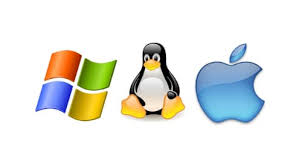

Por Carlos Ochoa
Software que una vez obtenido, puede ser usado, estudiado, modificado y distribuido libremente.
Libre != GratisEl Sistema Operativo es aquel que proporciona programas a los cuales tienen como función principal ayudar en el funcionamiento y desarrollo de las labores de la computadora, asi como tambien le dice a la computadora como usar sus propios componentes.
Son programas que ayudan a los usuarios a realizar cualquier tipo de tarea imaginable, desde un procesador de texto hasta una infinidad de tareas especificas.
| Libre | Privada |
|---|---|
| Libre Office | Microsoft Office |
| Dia | Visio |
| Planner / Gantt Project | MS-Project |
| VLC Multimedia | Windows Media Player |
| Gimp | Photoshop |
| Libre | Privada |
|---|---|
| Mozilla Firefox | Edge |
| mumble | Skype |
| Brasero | Nero |
| Audacity | Adobe Audition |